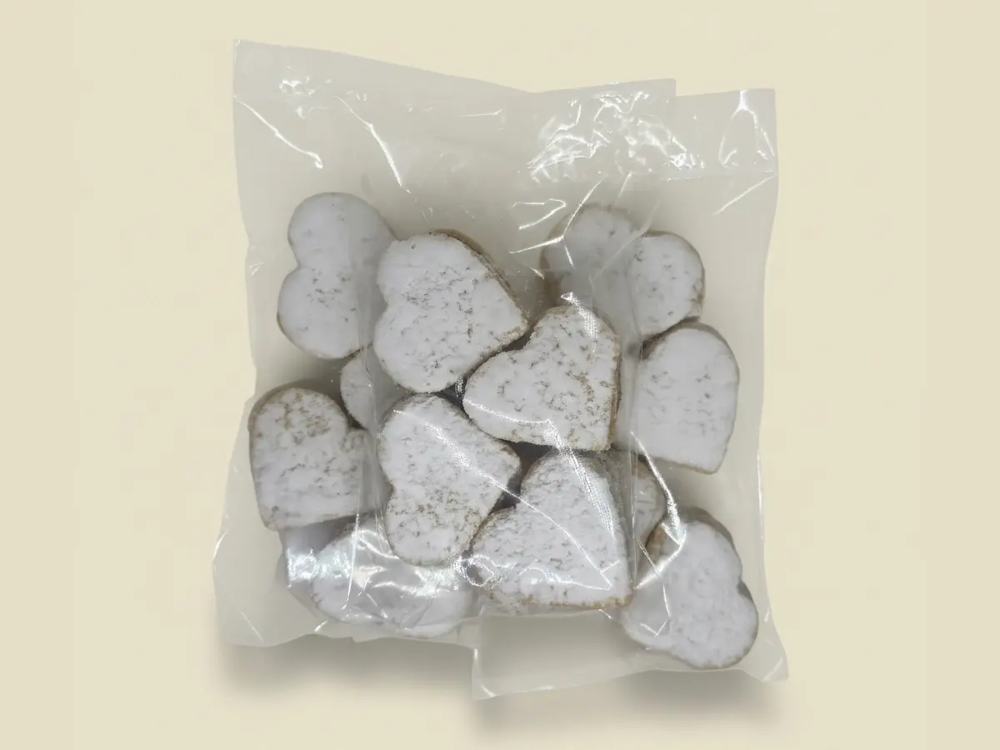

Alfajores Clásicos
$4000 COP
La esencia de la repostería fina. Alfajores artesanales de suavidad inigualable, rellenos de arequipe artesanal y terminados con una sutil lluvia de azúcar glass. Pequeños tesoros gastronómicos que transforman un café en una experiencia de lujo.
- Paquete x 50gr
- Arequipe casero de alta calidad
- Textura suave que se deshace en la boca
- Ensamblados a mano el mismo día
- Sin conservantes artificiales
Ideal para: postres de tarde, regalos empresariales, desayunos especiales y café con leche.
Pedir por WhatsApp
← Volver al catálogo
También te puede interesar
Más delicias artesanales de MisajoCookies:
¿Por qué elegir galletas artesanales en Cali? Descúbrelo aquí →